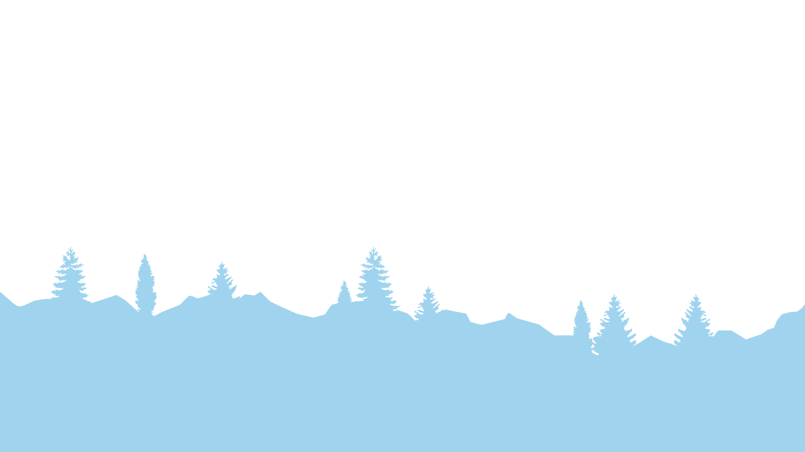
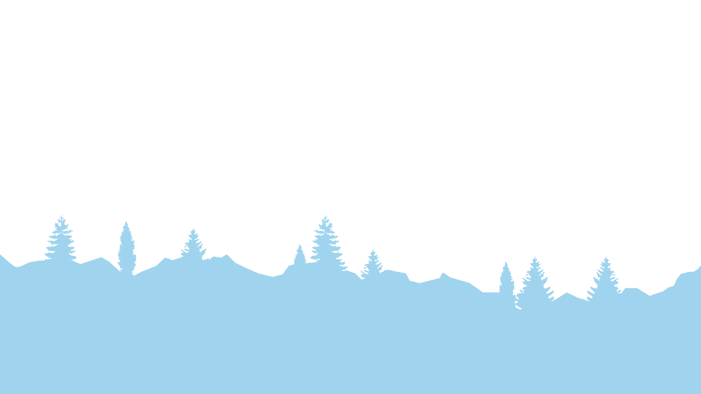

Info:
Type: 3D Design
Skills Used:
Texturing
LookDev
Rendering
3D
Tools Used:
Material Studies
They can be used in any 3D design workflow, from rendering to game design, and are created by me for practice and the texturing of models for Product Design or Game Design. These textures take into account the physical properties of the material such as roughness, metallic and height. This page will serve as a repository for materials that I’ve created for this purpose, and will be updated periodically.
Following the renders of the materials, I will leave the nodes that I used in Adobe 3D Substance Designer to create them.
Project Description
Opalescent Watercolor Fan Tiles

Full

Metallic

Normals

Roughness
This material is an opalescent fan tile pattern. It uses procedural watercolour textures to generate the colour and roughness. However, the lines are still sharp, and the metallics are vibrant, in contrast to the desaturated stylized colours.
Stylized Wood Planks

Full

Albedo

Normals

Roughness
These wood planks were created to be a stylized, mildly warped set of hardwood planks for use in an aging home. The intention with this was to mix realistic woodgrain in the reflections whilst keeping the rounded stylized appearance.

Kiwi Fruit Slice

Full

Albedo

Normals

Roughness
With these kiwi slices, I wanted to explore my ability to make a more realistic material, which doesn’t need to adhere to any tiling whatsoever. This enabled me to create a flat surface, where the number of seeds, shape, pit and colour of the kiwi could be changed at a whim. The end user can apply this material to a flat quad plane to instantly create the texture of a kiwi.
Dragonfruit Slice

Full

Albedo

Normals

Roughness
Similar to the kiwi slices, this was an exploration on texturing for a flat plane. The challenge in this one lay in the inability to fit much detail into the base colour map due to it being primarily white, instead taking lighting information from the other maps to create a more convincing dragon fruit texture.

Sport Mesh Cloth

Full

Normals

Opacity
A simple cloth texture, with variation in the weave and holes in order to play with normal and opacity maps. No albedo or roughness was created as the purpose of the texture is to import into Adobe 3D Substance Painter as a detail layer on top of existing roughness and colour values.
Ancient Bathroom Tiles

Full

Albedo

Normals

Roughness
My first attempt at a more complex tiled material. Incorporating a cracked texture which uses common noises to warp the result for a more organic appearance. The colours, roughness, amounts of cracks and moss levels in the caulk could all be adjusted by the end user at any given time.

UV Test Tiles

Full

Albedo
A simple utility focused texture made with the intention of troubleshooting UV maps within other 3D programs. It was created with minimalism in mind, with a simple checkerboard pattern, an arrow denoting the direction of the floor, and varying colours.


 
